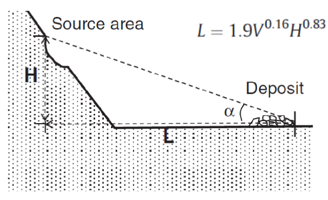
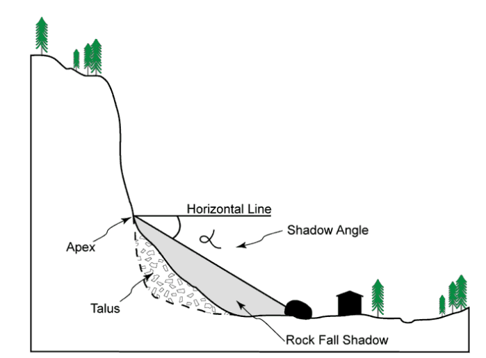
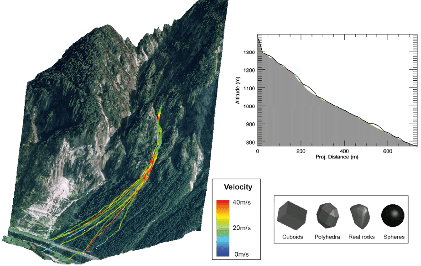
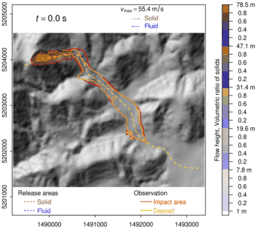

CARTOGRAFÍA GEOTÉCNICA
Propagación
Prof. Edier Aristizábal

Métodos para propagación
- Evidencias geológicas y geomorfológicas (Hoblitt et al., 1998)
- Métodos geométricos (Corominas et al., 2003; Copons & Vilaplana, 2008; Iverson et al., 1998)
- Métodos racionales
Métodos con evidencias geológicas
- Cartografía de los depósitos (antiguos y recientes)
- Estimar la mayor distancia alcanzada
- Si existe un número suficiente de MenM inventariados, estadísticas de la distancia alcanzada y su probabilidad puede ser estimada
Restricciones:
- Los depósitos antiguos pueden ser removidos por erosión o cubiertos por nuevos depósitos
- La geometría y condiciones responsable por antiguos MenM pueden haber cambiado.
- Los resultados no pueden ser extrapolados a otras regiones
Métodos geométricos
La evaluación de la propagación se realiza a través el análisis de relaciones geométricas entre parámetros de los MenM y distancia recorrida.
Ángulo de distancia de viaje
Angulo que conecta el puto mas alto de la corona del MenM a la margen distal de la masa desplazada. La tangente de este ángulo es la relación entre el componente vertical (H) y el horizontal (L). Relaciones empíricas señalan una relación entre dicho ángulo y el volumen del MenM. Sin embargo se presentan bajos coeficientes de correlación y mucha dispersión. Cuando se diferencia por tipo de movimiento mejora.
Por lo tanto cuando se conoce la fuente y el volumen potencial se puede conocer la distancia de propagación.
Modelo empírico de Rickenmann (1999)
Ángulo de sombra
Métodos racionales
Métodos discretos
Cuando la granularidad de los movimientos es importante. El caso mas simpe es un bloque en caída de una ladera. El caso mas complejo es avalancha de rocas, el cual está compuesto por un conjunto de bloques de roca (esféricas o circulares) con unas leyes que describen las fuerzas de contacto. Generalmente se reduce el número de bloques que conforman la avalancha. No se recomienda para otro tipo de eventos (deslizamientos, flujos de lodos, lahares, entre otros) debido a la reología del flujo de materiales.
Métodos continuos
Están basados en la mecánica de medios continuos, y pueden incluir el acoplamiento del comportamiento mecánico con la hidráulica y termo mecánica
